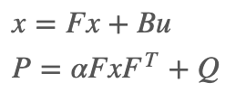
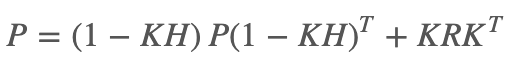
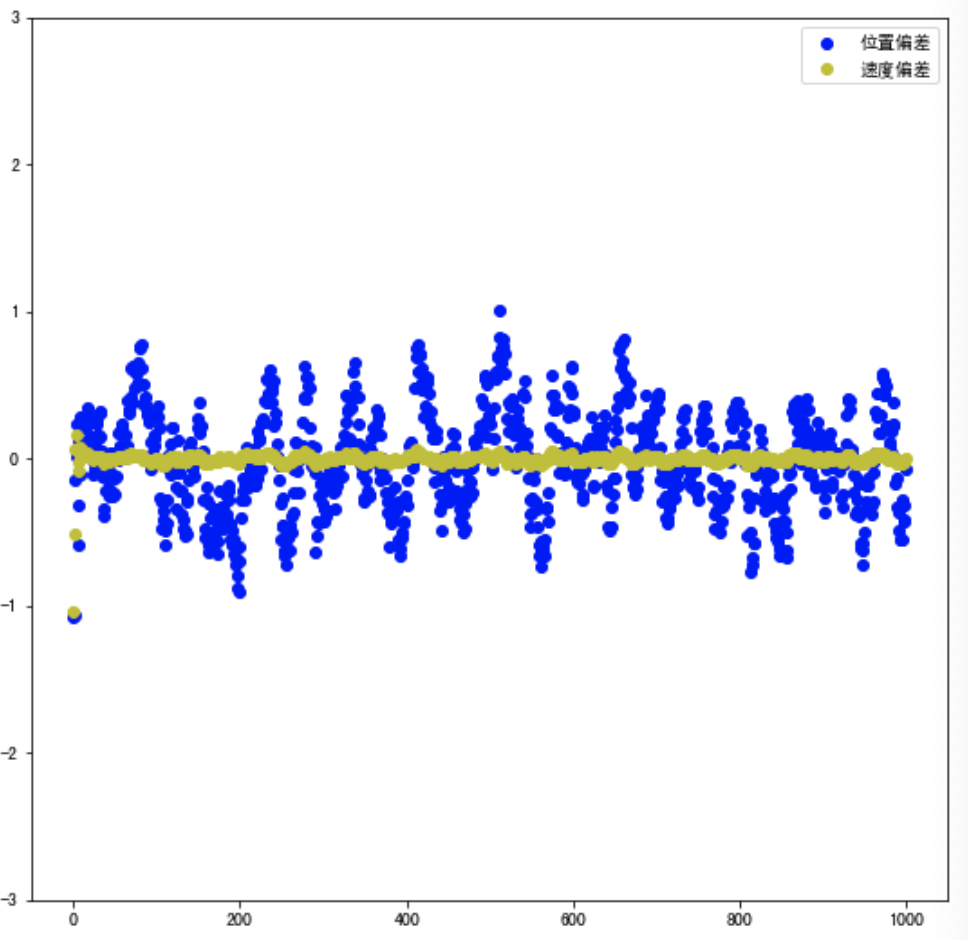
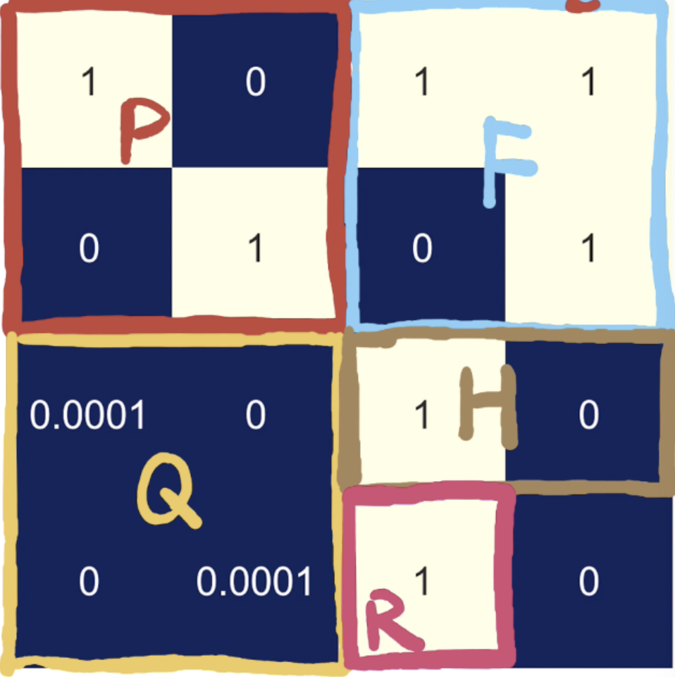
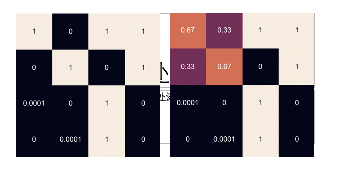
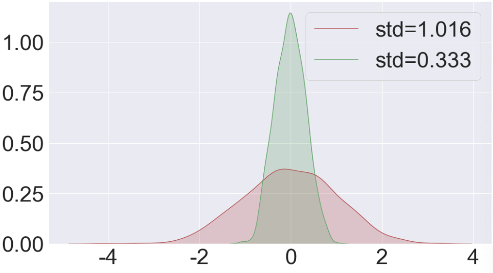

3.4.卡尔曼滤波器实践
学习目标
- 了解filterpy工具包
- 知道卡尔曼滤波的实现过程
- 能够利用卡尔曼滤波器完成小车目标状态的预测
1.filterpy
FilterPy是一个实现了各种滤波器的Python模块，它实现著名的卡尔曼滤波和粒子滤波器。我们可以直接调用该库完成卡尔曼滤波器实现。其中的主要模块包括：
filterpy.kalman
该模块主要实现了各种卡尔曼滤波器，包括常见的线性卡尔曼滤波器，扩展卡尔曼滤波器等。
filterpy.common
该模块主要提供支持实现滤波的各种辅助函数，其中计算噪声矩阵的函数，线性方程离散化的函数等。
filterpy.stats
该模块提供与滤波相关的统计函数，包括多元高斯算法，对数似然算法，PDF及协方差等。
filterpy.monte_carlo
该模块提供了马尔科夫链蒙特卡洛算法，主要用于粒子滤波。
开源代码在：
https://github.com/rlabbe/filterpy/tree/master/filterpy/kalman
我们介绍下卡尔曼滤波器的实现，主要分为预测和更新两个阶段，在进行滤波之前，需要先进行初始化：
- 初始化
预先设定状态变量dim_x和观测变量维度dim_z、协方差矩阵P、运动形式和观测矩阵H等，一般各个协方差矩阵都会初始化为单位矩阵，根据特定的场景需要相应的设置。
def __init__(self, dim_x, dim_z, dim_u = 0, x = None, P = None,
Q = None, B = None, F = None, H = None, R = None):
"""Kalman Filter
Refer to http:/github.com/rlabbe/filterpy
Method
-----------------------------------------
Predict | Update
-----------------------------------------
| K = PH^T(HPH^T + R)^-1
x = Fx + Bu | y = z - Hx
P = FPF^T + Q | x = x + Ky
| P = (1 - KH)P
| S = HPH^T + R
-----------------------------------------
note: In update unit, here is a more numerically stable way: P = (I-KH)P(I-KH)' + KRK'
Parameters
----------
dim_x: int
dims of state variables, eg:(x,y,vx,vy)->4
dim_z: int
dims of observation variables, eg:(x,y)->2
dim_u: int
dims of control variables,eg: a->1
p = p + vt + 0.5at^2
v = v + at
=>[p;v] = [1,t;0,1][p;v] + [0.5t^2;t]a
"""
assert dim_x >= 1, 'dim_x must be 1 or greater'
assert dim_z >= 1, 'dim_z must be 1 or greater'
assert dim_u >= 0, 'dim_u must be 0 or greater'
self.dim_x = dim_x
self.dim_z = dim_z
self.dim_u = dim_u
# initialization
# predict
self.x = np.zeros((dim_x, 1)) if x is None else x # state
self.P = np.eye(dim_x) if P is None else P # uncertainty covariance
self.Q = np.eye(dim_x) if Q is None else Q # process uncertainty for prediction
self.B = None if B is None else B # control transition matrix
self.F = np.eye(dim_x) if F is None else F # state transition matrix
# update
self.H = np.zeros((dim_z, dim_x)) if H is None else H # Measurement function z=Hx
self.R = np.eye(dim_z) if R is None else R # observation uncertainty
self._alpha_sq = 1. # fading memory control
self.z = np.array([[None] * self.dim_z]).T # observation
self.K = np.zeros((dim_x, dim_z)) # kalman gain
self.y = np.zeros((dim_z, 1)) # estimation error
self.S = np.zeros((dim_z, dim_z)) # system uncertainty, S = HPH^T + R
self.SI = np.zeros((dim_z, dim_z)) # inverse system uncertainty, SI = S^-1
self.inv = np.linalg.inv
self._mahalanobis = None # Mahalanobis distance of measurement
self.latest_state = 'init' # last process name
- 预测阶段
接下来进入预测环节，为了保证通用性，引入了遗忘系数α，其作用在于调节对过往信息的依赖程度，α越大对历史信息的依赖越小：

代码如下：
def predict(self, u = None, B = None, F = None, Q = None):
"""
Predict next state (prior) using the Kalman filter state propagation equations:
x = Fx + Bu
P = fading_memory*FPF^T + Q
Parameters
----------
u : ndarray
Optional control vector. If not `None`, it is multiplied by B
to create the control input into the system.
B : ndarray of (dim_x, dim_z), or None
Optional control transition matrix; a value of None
will cause the filter to use `self.B`.
F : ndarray of (dim_x, dim_x), or None
Optional state transition matrix; a value of None
will cause the filter to use `self.F`.
Q : ndarray of (dim_x, dim_x), scalar, or None
Optional process noise matrix; a value of None will cause the
filter to use `self.Q`.
"""
if B is None:
B = self.B
if F is None:
F = self.F
if Q is None:
Q = self.Q
elif np.isscalar(Q):
Q = np.eye(self.dim_x) * Q
# x = Fx + Bu
if B is not None and u is not None:
self.x = F @ self.x + B @ u
else:
self.x = F @ self.x
# P = fading_memory*FPF' + Q
self.P = self._alpha_sq * (F @ self.P @ F.T) + Q
self.latest_state = 'predict'
- 更新阶段
按下式进行状态的更新： 也可以写为： 其中，y是测量余量，S是测量余量的协方差矩阵。
在实际应用中会做一些微调，使协方差矩阵为：

代码如下：
def update(self, z, R = None, H = None):
"""
Update Process, add a new measurement (z) to the Kalman filter.
K = PH^T(HPH^T + R)^-1
y = z - Hx
x = x + Ky
P = (1 - KH)P or P = (I-KH)P(I-KH)' + KRK'
If z is None, nothing is computed.
Parameters
----------
z : (dim_z, 1): array_like
measurement for this update. z can be a scalar if dim_z is 1,
otherwise it must be convertible to a column vector.
R : ndarray, scalar, or None
Optionally provide R to override the measurement noise for this
one call, otherwise self.R will be used.
H : ndarray, or None
Optionally provide H to override the measurement function for this
one call, otherwise self.H will be used.
"""
if z is None:
self.z = np.array([[None] * self.dim_z]).T
self.y = np.zeros((self.dim_z, 1))
return
z = reshape_z(z, self.dim_z, self.x.ndim)
if R is None:
R = self.R
elif np.isscalar(R):
R = np.eye(self.dim_z) * R
if H is None:
H = self.H
if self.latest_state == 'predict':
# common subexpression for speed
PHT = self.P @ H.T
# S = HPH' + R
# project system uncertainty into measurement space
self.S = H @ PHT + R
self.SI = self.inv(self.S)
# K = PH'inv(S)
# map system uncertainty into kalman gain
self.K = PHT @ self.SI
# P = (I-KH)P(I-KH)' + KRK'
# This is more numerically stable and works for non-optimal K vs
# the equation P = (I-KH)P usually seen in the literature.
I_KH = np.eye(self.dim_x) - self.K @ H
self.P = I_KH @ self.P @ I_KH.T + self.K @ R @ self.K.T
# y = z - Hx
# error (residual) between measurement and prediction
self.y = z - H @ self.x
self._mahalanobis = math.sqrt(float(self.y.T @ self.SI @ self.y))
# x = x + Ky
# predict new x with residual scaled by the kalman gain
self.x = self.x + self.K @ self.y
self.latest_state = 'update'
那接下来，我们就是用filterpy中的卡尔曼滤波器方法完成小车位置的预测。
2.小车案例
现在利用卡尔曼滤波对小车的运动状态进行预测。主要流程如下所示：
- 导入相应的工具包
- 小车运动数据生成
- 参数初始化
- 利用卡尔曼滤波进行小车状态预测
- 可视化：观察参数的变化与结果
下面我们看下整个流程实现：
- 导入包
from matplotlib import pyplot as plt
import seaborn as sns
import numpy as np
from filterpy.kalman import KalmanFilter
- 小车运动数据生成
在这里我们假设小车作速度为1的匀速运动
# 生成1000个位置，从1到1000，是小车的实际位置
z = np.linspace(1,1000,1000)
# 添加噪声
mu,sigma = 0,1
noise = np.random.normal(mu,sigma,1000)
# 小车位置的观测值
z_nosie = z+noise
- 参数初始化
# dim_x 状态向量size,在该例中为[p,v]，即位置和速度,size=2
# dim_z 测量向量size，假设小车为匀速，速度为1，测量向量只观测位置，size=1
my_filter = KalmanFilter(dim_x=2, dim_z=1)
# 定义卡尔曼滤波中所需的参数
# x 初始状态为[0,0],即初始位置为0，速度为0.
# 这个初始值不是非常重要，在利用观测值进行更新迭代后会接近于真实值
my_filter.x = np.array([[0.], [0.]])
# p 协方差矩阵，表示状态向量内位置与速度的相关性
# 假设速度与位置没关系，协方差矩阵为[[1,0],[0,1]]
my_filter.P = np.array([[1., 0.], [0., 1.]])
# F 初始的状态转移矩阵，假设为匀速运动模型，可将其设为如下所示
my_filter.F = np.array([[1., 1.], [0., 1.]])
# Q 状态转移协方差矩阵，也就是外界噪声，
# 在该例中假设小车匀速，外界干扰小，所以我们对F非常确定，觉得F一定不会出错，所以Q设的很小
my_filter.Q = np.array([[0.0001, 0.], [0., 0.0001]])
# 观测矩阵 Hx = p
# 利用观测数据对预测进行更新，观测矩阵的左边一项不能设置成0
my_filter.H = np.array([[1, 0]])
# R 测量噪声，方差为1
my_filter.R = 1
- 卡尔曼滤波进行预测
# 保存卡尔曼滤波过程中的位置和速度
z_new_list = []
v_new_list = []
# 对于每一个观测值，进行一次卡尔曼滤波
for k in range(len(z_nosie)):
# 预测过程
my_filter.predict()
# 利用观测值进行更新
my_filter.update(z_nosie[k])
# do something with the output
x = my_filter.x
# 收集卡尔曼滤波后的速度和位置信息
z_new_list.append(x[0][0])
v_new_list.append(x[1][0])
可视化
预测误差的可视化
# 位移的偏差 dif_list = [] for k in range(len(z)): dif_list.append(z_new_list[k]-z[k]) # 速度的偏差 v_dif_list = [] for k in range(len(z)): v_dif_list.append(v_new_list[k]-1) plt.figure(figsize=(20,9)) plt.subplot(1,2,1) plt.xlim(-50,1050) plt.ylim(-3.0,3.0) plt.scatter(range(len(z)),dif_list,color ='b',label = "位置偏差") plt.scatter(range(len(z)),v_dif_list,color ='y',label = "速度偏差") plt.legend()运行结果如下所示：

2.卡尔曼滤波器参数的变化
首先定义方法将卡尔曼滤波器的参数堆叠成一个矩阵，右下角补0，我们看一下参数的变化。
# 定义一个方法将卡尔曼滤波器的参数堆叠成一个矩阵，右下角补0
def filter_comb(p, f, q, h, r):
a = np.hstack((p, f))
b = np.array([r, 0])
b = np.vstack([h, b])
b = np.hstack((q, b))
a = np.vstack((a, b))
return a

对参数变化进行可视化：
# 保存卡尔曼滤波过程中的位置和速度
z_new_list = []
v_new_list = []
# 对于每一个观测值，进行一次卡尔曼滤波
for k in range(1):
# 预测过程
my_filter.predict()
# 利用观测值进行更新
my_filter.update(z_nosie[k])
# do something with the output
x = my_filter.x
c = filter_comb(my_filter.P,my_filter.F,my_filter.Q,my_filter.H,my_filter.R)
plt.figure(figsize=(32,18))
sns.set(font_scale=4)
#sns.heatmap(c,square=True,annot=True,xticklabels=False,yticklabels==False,cbar=False)
sns.heatmap(c,square=True,annot=True,xticklabels=False,yticklabels=False,cbar=False)
对比变换：

从图中可以看出变化的P，其他的参数F，Q，H,R为变换。另外状态变量x和卡尔曼系数K也是变化的。
3.概率密度函数
为了验证卡尔曼滤波的结果优于测量的结果，绘制预测结果误差和测量误差的概率密度函数：
# 生成概率密度图像
z_noise_list_std = np.std(noise)
z_noise_list_avg = np.mean(noise)
z_filterd_list_std = np.std(dif_list)
import seaborn as sns
plt.figure(figsize=(16,9))
ax = sns.kdeplot(noise,shade=True,color="r",label="std=%.3f"%z_noise_list_std)
ax = sns.kdeplot(dif_list,shade=True,color="g",label="std=%.3f"%z_filterd_list_std)
结果如下：

可以看出卡尔曼滤波器预测的结果误差方差更小，优于测试的结果。
总结：
1.了解filterpy工具包
FilterPy是一个实现了各种滤波器的Python模块，它实现著名的卡尔曼滤波和粒子滤波器。直接调用该库完成卡尔曼滤波器实现。
2.知道卡尔曼滤波的实现过程
卡尔曼滤波器的实现，主要分为预测和更新两个阶段，在进行滤波之前，需要先进行初始化
- 初始化
预先设定状态变量和观测变量维度、协方差矩阵、运动形式和转换矩阵
- 预测
对状态变量X和协方差P进行预测
- 更新
利用观测结果对卡尔曼滤波的结果进行修征
3.能够利用卡尔曼滤波器完成小车目标状态的预测
导入相应的工具包
小车运动数据生成：匀速运动的小车模型
参数初始化：对卡尔曼滤波的参数进行初始化，包括状态变量和观测变量维度、协方差矩阵、运动形式和转换矩阵等
利用卡尔曼滤波进行小车状态预测：使用Filterpy工具包，调用predict和update完成小车状态的预测
可视化：观察参数的变化与结果
1.预测误差的分布：p,v
2.参数的变化：参数中变化的是X，P，K，不变的是F，Q，H，R
- 误差的概率密度函数：卡尔曼预测的结果优于测量结果